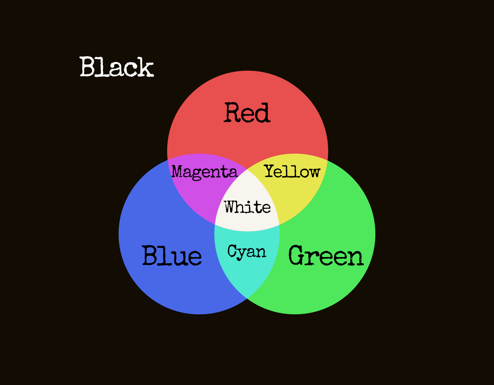

モジュール詳細：偽プランジャーボタン
何もかも上手くいかないこともあるよね。
このモジュールは、「PUSH ME!」以外のテキストが書かれた大きな赤いボタンで構成されている。書かれたテキストが「PUSH ME!」である場合は、異なるモジュールを参照している。
モジュール上のボタンはオン／オフの切り替えボタンである。ボタンを押してオン状態に切り替えると、モジュールの背景が三つの異なる色で素早く点滅する。
モジュールを解除するには、ある数字が爆弾のタイマーに含まれているときにボタンを押してオフ状態に切り替える。この数字を求めるには、以下の手順に従う。
爆弾のタイマーにその数字が含まれていないときにボタンを押してオフ状態に切り替えるとミスが記録される。他のモジュールを含め、ミスが記録されるとモジュールはリセットされる。
ステップ1: 色の合成
点滅している三色のうち一つを選び、下の図を使ってRGB要素のそれぞれがその色に存在するかしないかを特定する。残りの色についても同じことをする。その後、二色分のRGB要素の組み合わせを選ぶ。そのうちの一つをアンカーとして、アンカーではない方に存在している要素についてアンカーの要素の有無の状態を逆にする。その後、残りの一色分を使ってアンカーに同じ操作を行う。操作後のアンカーの状態を図と比較し、該当する色がステップ2に必要な色である。
